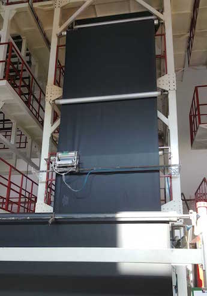
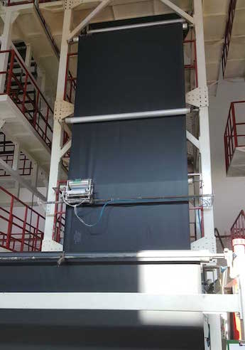

Nossos Produtos

Lona Preta

Lona Incolor

Lona Extra Forte Anti-UV
Processo de Fabricação
 

Na Lonabras, nosso processo envolve seleção rigorosa de matérias-primas, extrusão de polímeros de alta pureza e tratamento anti-UV. Garantimos lonas resistentes, impermeáveis e com longa vida útil.
Entre em Contato
WhatsApp:
 Clique aqui para conversar
Clique aqui para conversar
Interessado na nossa lona plástica preta? Entre em contato conosco para mais informações e pedidos:
Email: vendas@lonabras.com.br
Telefone: (41) 99106-2006
Horário de funcionamento: Seg a Sex - 08:00 às 18:00